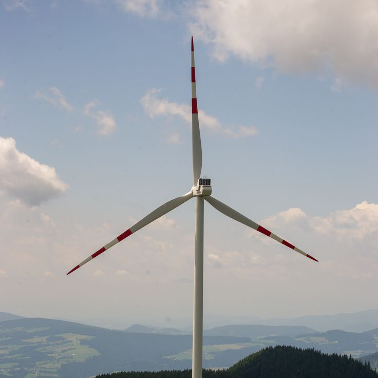

CO₂-Emissionen weltweit sichtbar gemacht
Verstehen Sie, welche Länder und Unternehmen maßgeblich zum CO₂-Ausstoß beitragen – und schaffen Sie die Grundlage für fundierte Entscheidungen in Richtung Klimaschutz und Nachhaltigkeit.
Zur Tabelle Ohne Framework
Alle Details hier erhältlich in der Fallstudie
Unser Service
ATMOS Track bereitet Emissionsdaten übersichtlich auf und unterstützt dabei, Entwicklungen, Unterschiede und Zusammenhänge zwischen Ländern, Branchen und Unternehmen schneller zu erkennen.
Globale Emissionen analysieren
Vergleichen Sie CO₂-Emissionen verschiedener Länder und erkennen Sie globale Trends und Unterschiede.
Unternehmen im Detail
Untersuchen Sie Emissionsdaten einzelner Unternehmen und filtern Sie gezielt nach Branche oder Standort.
Interaktive Datenvisualisierung
Nutzen Sie dynamische Diagramme und Tabellen, um komplexe Daten einfach verständlich darzustellen.
Technischer Vergleich
Erleben Sie den Unterschied zwischen einer Framework-basierten und einer selbst entwickelten Tabellenlösung.